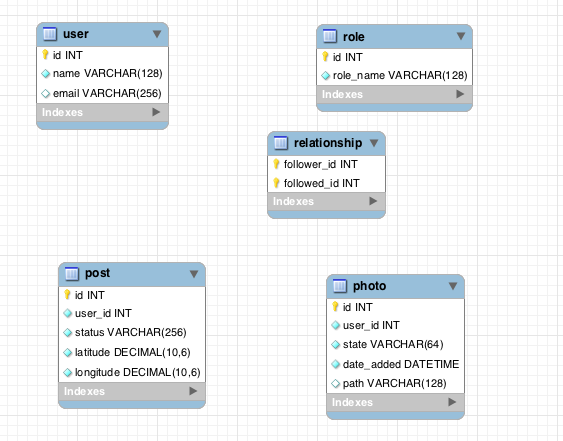
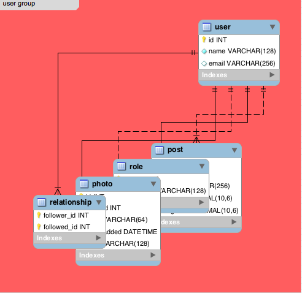
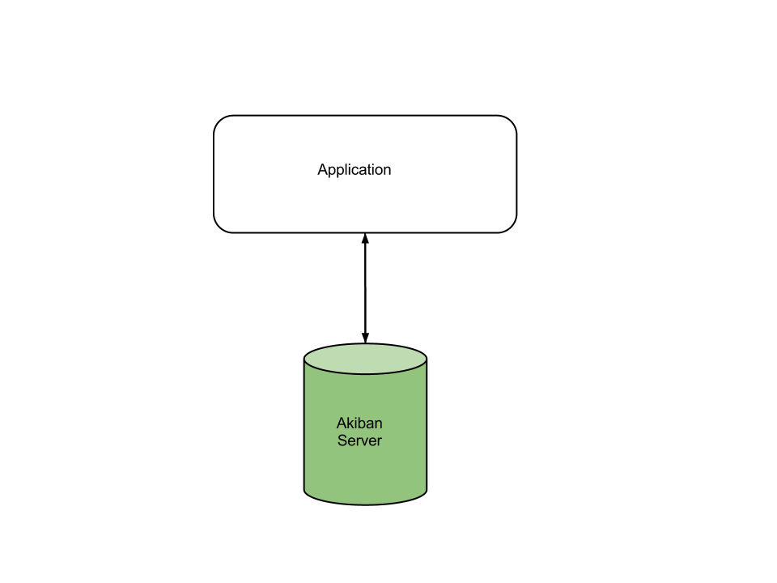
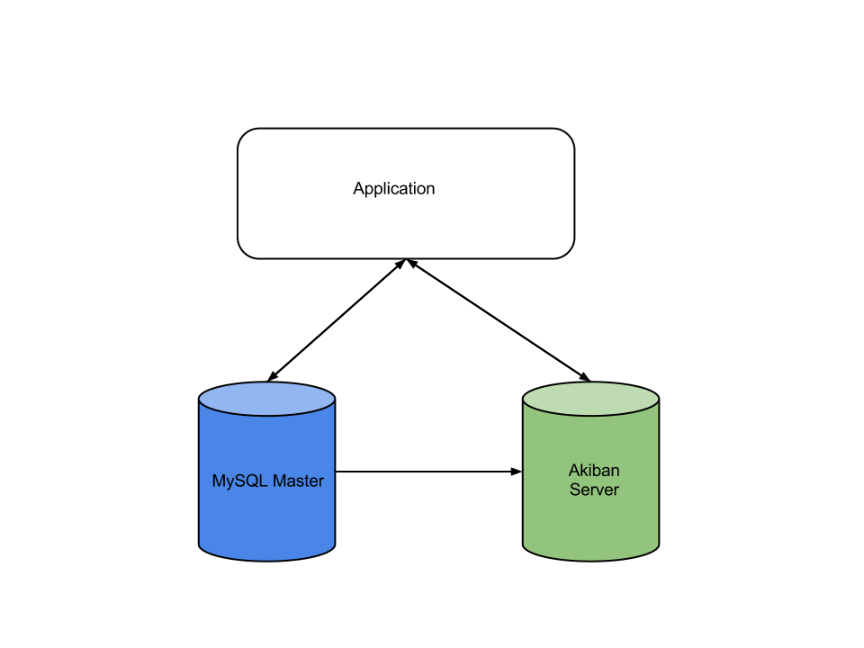
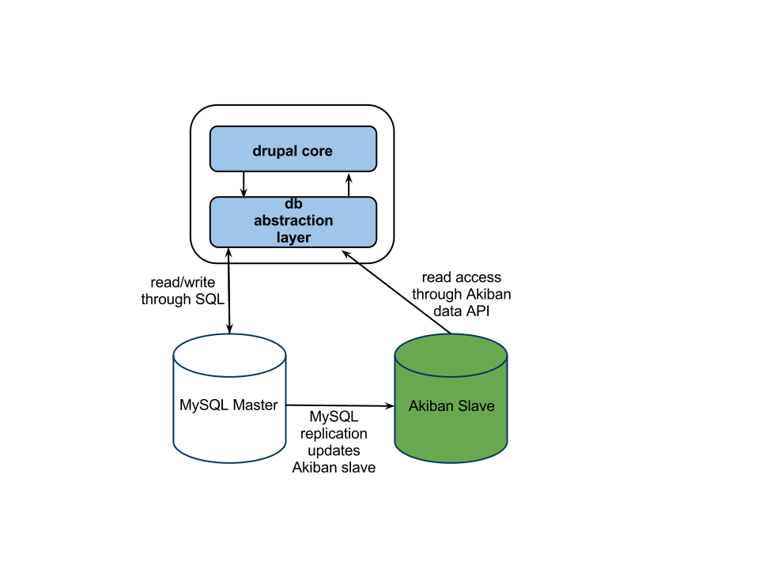

Akiban
Akiban is a new (soon to be fully open source) relational database featuring a unique storage optimization referred to as table grouping.
Table Grouping
Let there be peace in the Vietnam of Computer Science.


App Model in an ORM
class User < ActiveRecord::Base
.
.
has_many :posts
has_many :roles
has_many :photos
has_many :relationships
.
.
end
Vietnam
Peace
Why Does That Help?
Lots of reasons!
- Joins within a group are essentially "free"
- SQL that you know and love still works
- Retrieve an entire object in 1 request
SELECT ** FROM sometable
Nested Result Sets
sample=> set OutputFormat = 'json';
SET OutputFormat
sample=> select ** from "user" where id = 1;
{"id":1,"name":"posulliv","email":"padraig@akiban.com","sample.photo":[{"id":1,"user_id":1,"state":"PROFILE","date_added":"2012-10-15 17:02:22","path":"URI_FOR_IMAGE_FILE"}],"sample.post":[{"id":1,"user_id":1,"status":"this is a post!","latitude":"51.8968917","longitude":"-8.4863157"},{"id":2,"user_id":1,"status":"at the brog having a pint!","latitude":"51.8975668","longitude":"-8.4725516"}],"sample.role":[{"user_id":1,"role_name":"admin"}]}
(1 row)
sample=>
Akiban Server Installation
All that is required is Java!
Standalone Akiban Deployment
Akiban Adapter for MySQL Installation
Installs as a plugin in MySQL 5.5
Akiban with MySQL Deployment
Ubuntu Installation Example
sudo apt-get install -y python-software-properties
sudo apt-key adv --keyserver keyserver.ubuntu.com --recv 0AA4244A
sudo add-apt-repository "deb http://software.akiban.com/apt-developer lucid main"
sudo apt-get update
sudo apt-get install -y postgresql-client
sudo apt-get install -y akiban-server akiban-adapter-mysql
echo "install plugin akibandb soname 'libakibandb_engine.so'" | mysql -u root
Deploying Akiban as MySQL Replica
- Spin up regular MySQL slave
- Install Akiban Server and Akiban Adapter for MySQL
- Determine table grouping
- Convert InnoDB/MyISAM tables to Akiban
- Modify application to send MySQL problem queries to Akiban
Example Deployment (Drupal application)
Creating Table Groups in MySQL
CREATE TABLE table_name
(
...
CONSTRAINT `__akiban_fk` FOREIGN KEY (col) REFERENCES par_tab (par_col)
) ENGINE=AkibanDB
ALTER TABLE tab ADD CONSTRAINT `__akiban_fk` FOREIGN KEY (col) REFERENCES par_tab (par_col)System, Session & Status Variables
A number of system variables
for configuring Akiban Adapter for MySQL.
SHOW ENGINE STATUS
mysql> SHOW ENGINE akibandb STATUS\G
*************************** 1. row ***************************
Type: AKIBANDB
Name:
Status:
=====================================
AkibanDB is alive
=====================================
Akiban server connection : 127.0.0.1:5140
akiban.admin : /etc/akiban/config
akibandb_version : 0.6.2-r1068
akserver.datapath : /var/lib/akiban
akserver.host : 0.0.0.0
akserver.max_ais_size_bytes : 1048576
akserver.port : 5140
akserver.postgres.port : 15432
akserver.postgres.statementCacheCapacity : 0
akserver.querylog.enabled : false
akserver.querylog.exec_time_threshold : 0
...
mysql>
Configuring Akiban Adapter for MySQL
/etc/akiban/
- logging.properties
Monitoring Akiban Adapter for MySQL
Existing MySQL monitoring tools can be used to monitor MySQL slave.
System and status variables from Akiban can be monitored if needed.
Cacti templates available for monitoring Akiban Server.
Adapters for Other Databases
We covered the Akiban Adapter for MySQL.
Working on adapters for other systems - Sybase, PostgreSQL, Oracle, etc.